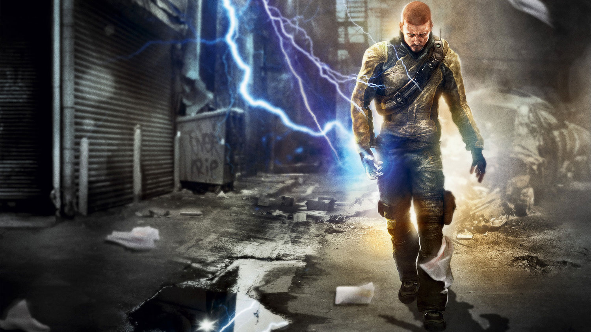
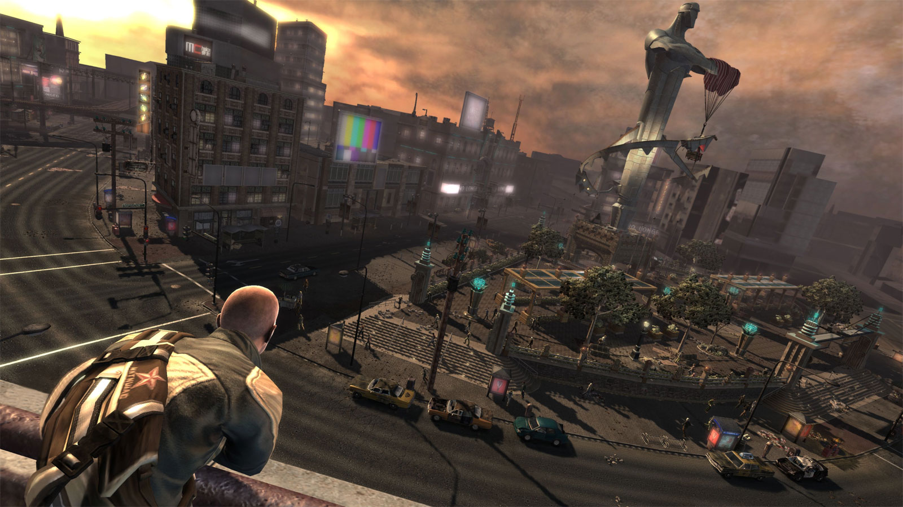
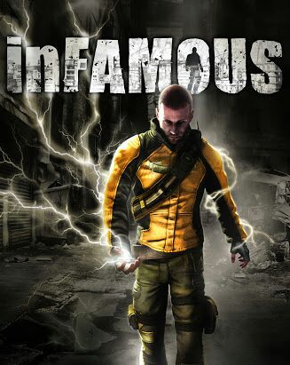
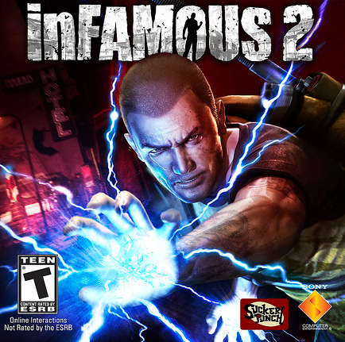
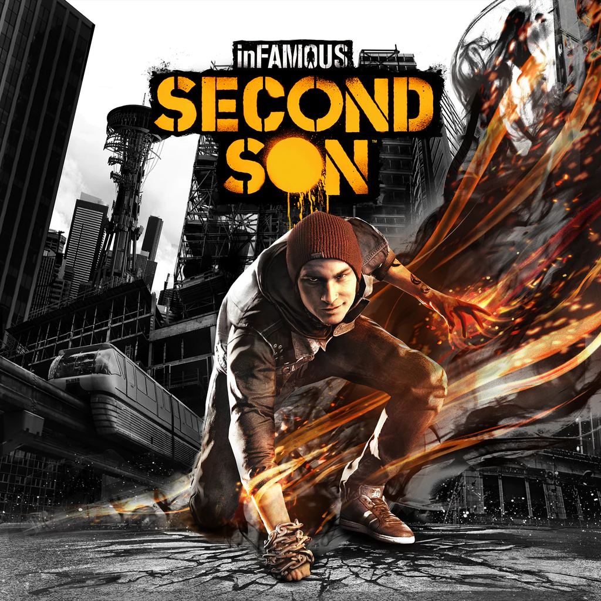
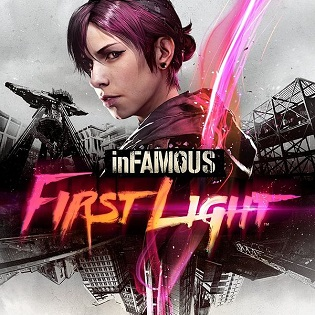
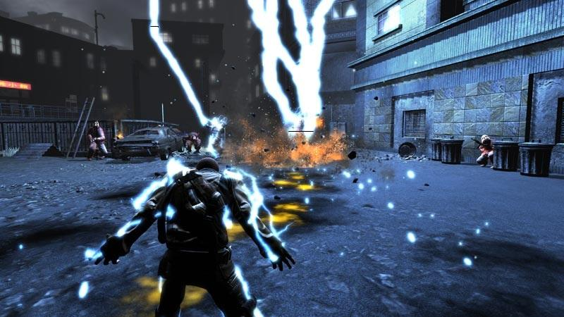
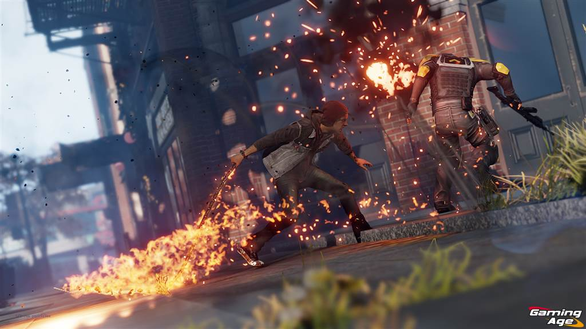

inFAMOUS: superpoderes, escolhas e consequências

Lançada pela Sucker Punch Productions, a franquia inFAMOUS se destacou por combinar ação em mundo aberto com uma proposta diferente para a época: permitir que as escolhas do jogador influenciassem diretamente a evolução da história e do protagonista. Em vez de apenas controlar um herói tradicional, o jogador precisava decidir constantemente como utilizaria seus poderes e qual caminho seguiria ao longo da jornada.
A série começou em 2009 com o lançamento de inFAMOUS para PlayStation 3. A história acompanha Cole MacGrath, um entregador comum que ganha habilidades elétricas após uma explosão misteriosa devastar parte da cidade de Empire City. A partir desse momento, Cole se vê no centro de uma crise envolvendo grupos criminosos, indivíduos com poderes especiais e uma ameaça muito maior do que ele imaginava.
O grande diferencial da franquia está em seu sistema de moralidade. Durante a campanha, o jogador toma decisões que afetam a personalidade do protagonista, a maneira como a população reage a ele e até mesmo algumas partes da narrativa. É possível agir como um herói que protege os cidadãos ou como alguém que utiliza seus poderes de forma egoísta e destrutiva. Essas escolhas alteram habilidades, aparência e eventos da história, criando experiências diferentes para cada jogador.
Uma jogabilidade baseada em liberdade
A jogabilidade de inFAMOUS é centrada na exploração de grandes cidades abertas. Utilizando seus poderes, o protagonista pode escalar prédios, deslizar por cabos elétricos, percorrer grandes distâncias rapidamente e enfrentar inimigos utilizando ataques variados.

Os combates combinam ação em terceira pessoa com o uso criativo de habilidades especiais. Conforme a história avança, novos poderes são desbloqueados, permitindo ataques mais poderosos e estratégias diferentes para enfrentar os desafios. A sensação de evolução é um dos pontos fortes da série, já que o jogador começa com habilidades limitadas e termina controlando poderes impressionantes.
Além dos confrontos, o jogo incentiva a exploração do mapa através de missões secundárias, coleta de recursos e atividades espalhadas pela cidade. Isso ajuda a tornar o mundo mais vivo e aumenta a sensação de liberdade durante a aventura.
Os principais jogos da franquia
A franquia conta com três títulos principais. O primeiro foi inFAMOUS (2009), responsável por apresentar Cole MacGrath e o sistema de escolhas morais. Em seguida veio inFAMOUS 2 (2011), que expandiu os poderes, trouxe melhorias na jogabilidade e aprofundou a história do protagonista.


Em 2014 foi lançado inFAMOUS Second Son para PlayStation 4. O jogo apresentou um novo protagonista, Delsin Rowe, que possui a capacidade de absorver e utilizar diferentes tipos de poderes. Além de gráficos mais avançados, o título aproveitou o hardware da nova geração para criar um mundo mais detalhado e efeitos visuais impressionantes.

Também foi lançado inFAMOUS First Light, uma expansão independente focada na personagem Fetch, aprofundando sua história e explorando suas habilidades baseadas em energia neon.

Gráficos e identidade visual
Desde o primeiro jogo, a série chamou atenção por seus efeitos visuais. Os poderes elétricos de Cole criavam combates cheios de luzes, explosões e destruição, ajudando a transmitir a sensação de controlar alguém com habilidades extraordinárias.

Com a chegada de Second Son, os gráficos deram um salto significativo. Os efeitos de fumaça, neon, vídeo e concreto se tornaram um dos principais destaques do jogo. A cidade de Seattle foi recriada com grande riqueza de detalhes, oferecendo ambientes vibrantes e visualmente impressionantes. Mesmo anos após seus lançamentos, muitos jogadores ainda elogiam a qualidade visual da franquia e a forma como os poderes são representados na tela.

O peso das escolhas
Um dos aspectos mais marcantes de inFAMOUS é o sistema de escolhas. Diferente de muitos jogos em que as decisões possuem pouco impacto, aqui elas fazem parte da experiência principal. Ao longo da campanha, o jogador é constantemente colocado diante de situações em que precisa escolher entre ajudar outras pessoas ou agir em benefício próprio. Essas decisões influenciam o rumo da história e transformam a maneira como o protagonista é visto pela população.
Esse sistema ajudou a criar uma identidade própria para a franquia. Mais do que apenas derrotar inimigos, o jogador precisava decidir que tipo de pessoa queria se tornar. Essa combinação entre superpoderes, exploração e consequências tornou inFAMOUS uma das séries mais memoráveis da história do PlayStation.